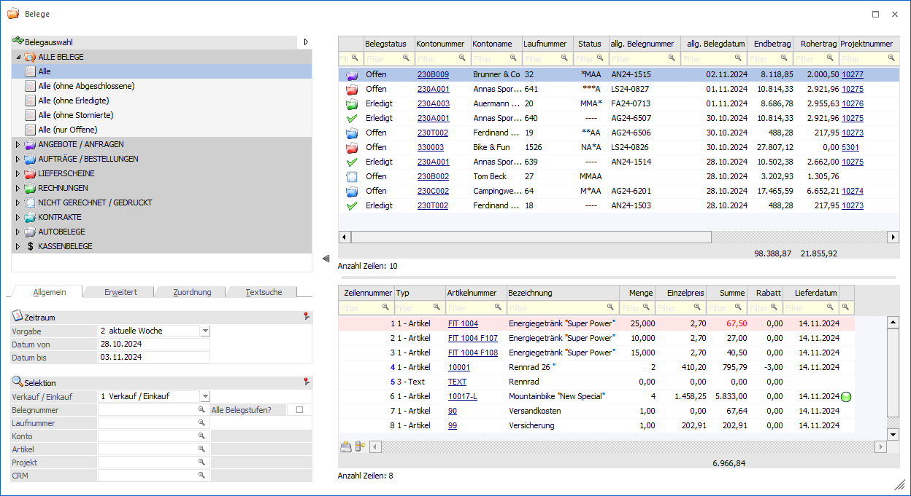
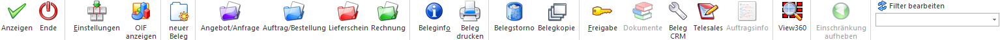

Mit Hilfe des Fenster "Belege" bzw. "Belege - Matchcode" besteht einerseits eine umfangreiche und detaillierte Übersicht über die bestehenden Belege und andererseits die Möglichkeit, diese Belege einfach und schnell zu stornieren, kopieren, drucken, usw. Der Aufruf des Fensters kann folgendermaßen erfolgen:
ü Belege
In der Variante "Belege"
kann man nach Belegen suchen, diese betrachten und ggfs. bearbeiten. Das
Programm wird hierbei manuell über…
1 WinLine FAKT
1 Erfassen
1 Belegverwaltung
1 Belege
… gestartet.
ü Belege - Personenkonto / Belege -
Projektstamm / Belege - Info
Es wurde der Buttons "Belege" im
Personenkontenstamm, im Projektstamm oder der Konten- bzw. Projektinformation
angewählt. Hierdurch werden alle Belege des Kontos bzw. des Projekts,
eingeschränkt auf die letzten 14 Tage, angezeigt. Zusätzlich wird der Bereich
"Selektion" automatisch zugeklappt.
ü Belege - Matchcode
Die Variante
"Belege - Matchcode" wird gestartet, wenn der Fokus in dem Feld "Laufnummer"
oder "Belegnummer" liegt und das Lupen-Symbol bzw. die Taste F9 gedrückt wird.
Der Fokus liegt anschließend auf dem Suchen und Übernehmen von Belegen in das
Ausgangsfenster.
Hinweis
Wenn in dem Feld "Laufnummer" bzw. "Belegnummer" ein Teil der gesuchten Nummer eingetragen wurde und die Taste F9 gedrückt wird, dann wird diese Eingabe als Suchbegriff übernommen.

Das Belege-Programm untergliedert sich hierbei in die folgenden Bereiche, welche in den nachfolgenden Kapiteln beschrieben werden
ü Belege / Belege - Matchcode - Bereich
"Selektion"
In diesem Bereich kann definiert werden, welche Belege
angezeigt werden sollen.
ü Belege / Belege - Matchcode - Bereich
"Beleganzeige"
In diesem Bereich werden die Belege, unterteilt nach
Belegkopf- und Belegmittelteilsinformationen, detailliert aufgelistet.
Buttons

Ø Anzeigen
Durch Anwahl des Buttons "Anzeigen" bzw. der Taste F5 wird die Beleganzeige aktualisiert.
Ø Ende
Mit Hilfe des Buttons "Ende" bzw. der Taste ESC wird das Fenster geschlossen.
Ø Einstellungen
Durch Anwahl dieses Buttons wird das Fenster "Belege / Belege-Matchcode - Einstellungen" geöffnet, in welchem individuelle Einstellung für die Anzeige und das Programmverhalten getroffenen werden können.
Ø OIF anzeigen
Durch Anwahl des Buttons "OIF anzeigen" wird im rechten Teil des Bildschirms ein Informationsbereich eingeblendet. In diesem werden Daten zum Konto und dem ausgewählten Beleg angezeigt.
Ø Neuer Beleg
Die Anwahl des Buttons "Neuer Beleg" öffnet das Fenster "Belege - Erfassen", in welchem neue Belege erstellt werden können.
Ø Angebot / Anfrage
Durch Anwahl des Buttons "Angebot / Anfrage" kann ein offenes Angebot bzw. eine offene Anfrage bearbeitet werden.
Ø Auftrag / Bestellung
Durch Anwahl des Buttons "Auftrag / Bestellung" kann ein offener Auftrag bzw. eine offene Bestellung bearbeitet oder ein offenes Angebot bzw. eine offene Anfrage die Belegstufe "Auftrag / Bestellung" übernommen werden.
Ø Lieferschein
Durch Anwahl des Buttons "Lieferschein" kann ein offener Lieferschein bearbeitet oder ein offenes Angebot (Anfrage) / offener Auftrag (Bestellung) in die Belegstufe "Lieferschein" übernommen werden.
Ø Rechnung
Durch Anwahl des Buttons "Rechnung" kann eine noch nicht gebuchte Rechnung bearbeitet oder ein offenes Angebot (Anfrage) / offener Auftrag (Bestellung) / offener Lieferschein in die Belegstufe "Lieferschein" übernommen werden.
Ø Beleginfo
Der markierte Beleg wird am Bildschirm dargestellt. Hierbei ist das Verhalten abhängig von der Definition der FAKT-Parameter (WinLine START - Applikationsparameter - FAKT-Parameter - Belege - Belegarchivierung - Option "Archivbeleg bei der Beleginfo verwenden" -> standardmäßig aktiviert).
ü Button "Beleginfo" bzw.
Doppelklick auf den Beleg
Es wird das letzte Druckbild vom Beleg aus dem
Autoarchiv am Bildschirm dargestellt.
ü Button "Beleginfo" + STRG-Taste
bzw. Doppelklick + STRG-Taste auf den Beleg
Es wird die "Archiv - Vorschau"
geöffnet und dort das letzte Druckbild vom Beleg aus dem Autoarchiv
dargestellt.
Hinweis
Wenn gemäß den Applikationsparametern der WinLine FAKT für das Autoarchiv mehrere Versionen gespeichert werden sollen (WinLine START - Applikationsparameter - FAKT-Parameter - Belege - Belegarchivierung - Anzahl der Versionen pro Belegstufe) und der Beleg bereits mehrfach gedruckt wurde, dann steht die Buttons "ältere Version" bzw. "jüngere Version" zur Verfügung. Über diese kann eine andere Druckversion ausgewählt werden.
ü Button "Beleginfo" + SHIFT-Taste
bzw. Doppelklick + SHIFT-Taste auf den Beleg
Der Beleg wird neu gerechnet und
am Bildschirm dargestellt.
Hinweis
Das Öffnen der Beleginfo per Doppelklick wird in der Variante "Belege - Matchcode" nicht unterstützt.
Ø Belegdruck
Der Beleg wird auf dem Drucker bzw. Spooler ausgegeben. Für das Autoarchiv wird hierbei kein neuer Eintrag erzeugt.
Ø Belegstorno
Der bestehende Beleg kann gelöscht bzw. mit Hilfe des Fensters "Beleg stornieren" oder "Kontrakte löschen" storniert werden.
Ø Belegkopie
Der bestehende Beleg kann mit Hilfe des Fensters "Beleg kopieren" auf einen anderen Kunden bzw. Lieferanten dupliziert werden.
Hinweis
Wird bei der Belegkopie die Belegumstellung nicht geöffnet, so wird der neue Beleg immer als "nicht gerechnet / gedruckt" gekennzeichnet (eine Ausnahme bilden hierbei Kontrakte). Sollte im Programm "Belege" bzw. "Belege - Matchcode" der Bereich unter "Belegauswahl" nicht zur Verfügung stehen, so wird dieser dynamisch angezeigt und in diesen gewechselt. Der Bereich wird während der nächsten Aktualisierung der Beleganzeige entsprechend wieder entfernt.
Ø Freigabe
Falls für einen Beleg eine Freigabe erforderlich ist, kann diese durch diesen Button erfolgen bzw. geändert werden.
Ø Dokumente
Durch Anwahl dieses Buttons können die Archivdokumente des Belegs angezeigt werden.
Hinweis
An folgenden Stellen können Archivdokumenten einem Beleg hinzugefügt werden:
ü Belegerfassung => Drag & Drop im Belegkopf
ü Belegmanagement => rechte Maustaste (Funktion "Dokumente zu Beleg hinzufügen") oder Drag & Drop
ü Belege / Belege => Matchcode - rechte Maustaste (Funktion "Dokumente zu Beleg hinzufügen") oder Drag & Drop
ü Belegkurzinfo => Drag & Drop
ü Batchbeleg => Dokumentenangabe per Spalte "DokumentenID"
Ø Beleg CRM
Mit Hilfe des Buttons "Beleg CRM" kann in das Fenster "Belege - CRM-Ansicht" gewechselt werden. Dort ist es möglich bestehende CRM-Fälle des Belegs zu betrachten, neue Fälle zu erfassen oder bestehende Fälle mit dem Beleg zu verknüpfen bzw. die Verknüpfungen zu entfernen.
Ø Telesales
Wird ein (noch nicht erledigter) Beleg der Stufen "Angebot / Anfrage", "Auftrag / Bestellung" oder "nicht gerechnet / nicht gedruckt" angewählt, so kann dieser Beleg im Telesales geöffnet werden.
Ø Auftragsinfos
Durch Anwahl dieses Buttons kann die Auswertung "Auftragsverfolgung" für einen selektierten Kundenauftrag bzw. einer Lieferantenbestellung ausgegeben werden. In der Auswertung kann die zum Auftrag gehörige Lieferantenbestellungen, sowie bereits angelegte Produktionsaufträge (und deren Lieferantenbestellungen) zu Informationszwecken aufgelistet werden, bzw. die zur Bestellung gehörigen Aufträge, sowie bereits angelegte Produktionsaufträge.
Ø View 360
Bei Anwahl dieses Buttons wird die View 360 gestartet, wobei der aktuelle Beleg als Ausgangspunkt der Analyse dient.
Ø Einschränkung aufheben
Durch einen Doppelklick auf eine Artikelzeile (Ausnahme "Artikelnummer") in der Tabelle "Belegmitte" wird ein Quickfilter ausgelöst. D.h. es werden nur noch Belege angezeigt, welche diesen Artikel in sich tragen. Durch Anwahl des Buttons "Einschränkungen aufheben" kann der Quickfilter wieder entfernt werden.
Ø Filter bearbeiten
Durch Anklicken des Buttons "Filter bearbeiten" kann die Belegsuche nach frei definierbaren Kriterien eingeschränkt werden.